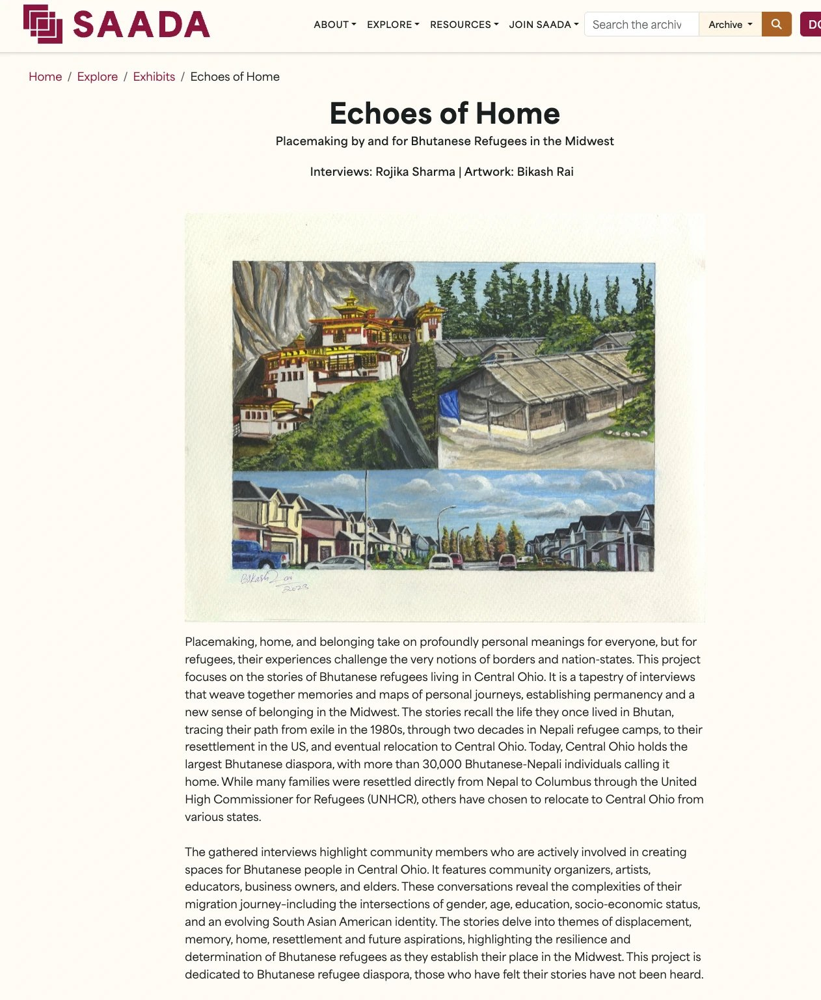

Projects
An ongoing repository of my web design, digital campaigns, and community archives, built with intention, accessibility, and care.
As Platform Manager and Designer for the Aspire Online Community at the Women's Center for Economic Opportunity (WCEO), I architect sociotechnical systems for an emerging network of women business leaders. My work bridges platform design, community ecology, and data justice, creating interoperable spaces for learning and growth while establishing data governance practices grounded in digital care and collective agency.
A walkthrough of the site: the issue switcher, leader story carousel, and article pop-ups.
As an Archival Creators Fellow, I led a public-facing oral history project with Bhutanese refugees in Central Ohio for the South Asian American Digital Archive (SAADA), a public digital archive. I worked alongside artists and community leaders so the exhibit reflects how the community sees itself, with artwork by Bikash Rai.

Green Olive Company
I run their social media, filming and posting video content that shares their products and story, and I'm leading their holiday campaign from planning to posting.
Accessible, responsive websites designed in Figma and built in HTML, CSS, and JavaScript.
Social media, email, and event campaigns that bring people in and keep them engaged.
Programs, workshops, and member journeys designed around how people learn and participate.
Interviews, observation, and community input that shape solutions people actually use.
Get in touch